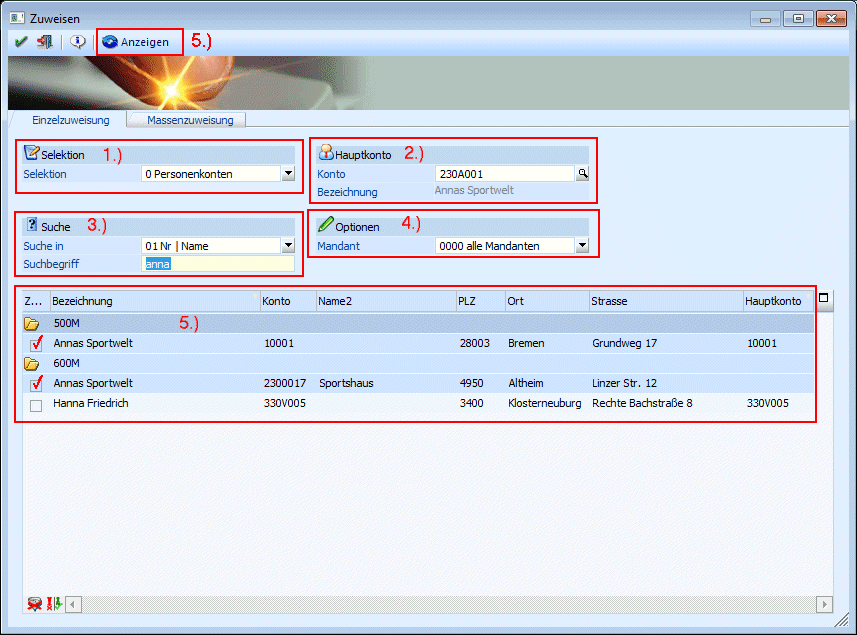
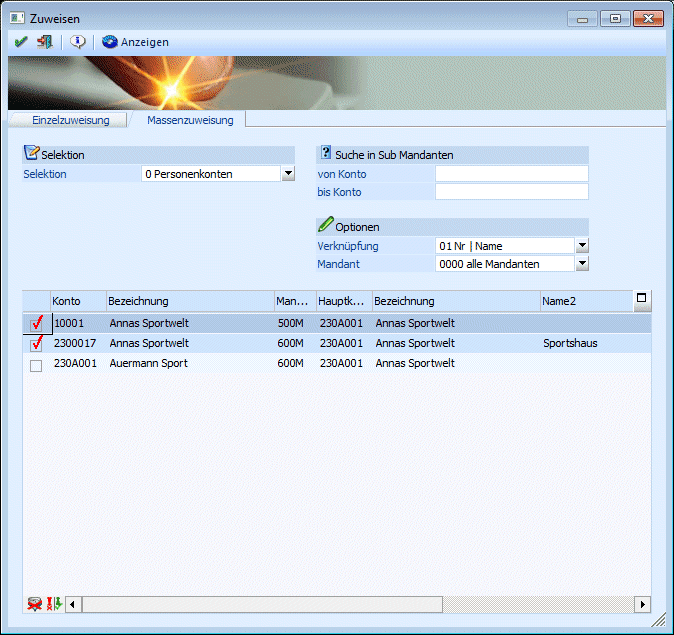

Im Fenster Zuweisen, das über den Menüpunkt
1 WinLine START
1 Optionen
1 Konsolidierung
1 Zuweisen
aufgerufen werden kann, können Zuweisungen von unterschiedlichen Datenbereichen zwischen Haupt- und SUB-Mandanten durchgeführt werden.
Achtung:
Zuweisungen können NUR im Hauptmandanten gemacht werden.
Für die Zuweisung gibt es zwei Möglichkeiten:
Einzelzuweisung
Die Einzelzuweisung findet in mehreren Schritten statt:
1.) Selektion
Zuerst muss der Datenbereich selektiert werden, für den die Zuweisung durchgeführt werden soll. Dabei stehen die Datenbereiche
ü 0 Personenkonten
ü 1 Sachkonten
ü 2 Kontakte
ü 3 Kostenstellen
ü 4 Kostenarten
ü 5 Kostenträger
zur Verfügung.
2.) Hauptdatensatz
Danach muss der Hauptdatensatz (Hauptkonto, Hauptkontakt, Hauptkostenstelle, Hauptkostenart, Hauptkostenträger) ausgewählt werden. Abhängig vom selektierten Datenbereich steht auch der entsprechende Matchcode zur Verfügung, der mit der F9-Taste aufgerufen werden kann.
Wurde ein Datensatz ausgewählt, wird eine Zeile darunter die Bezeichnung angezeigt.
3.) Suche
Aus der Auswahllistbox "Suche in" kann gewählt werden, in welchen Feldern die Referenzsuche durchgeführt werden soll. Dabei stehen - auch wieder abhängig vom ausgewählten Datenbereich - unterschiedliche Optionen zur Verfügung:
In den Datenbereichen "0 Personenkonten", "1 Sachkonten", "3 Kostenstellen", "4 Kostenarten", "5 Kostenträger" steht immer die Option
ü 01 Nr | Name
zur Verfügung. D.h. bei dieser Auswahl wird der Suchbegriff in den Feldern "Nummer" und "Name/Bezeichnung" gesucht. Im Datenbereich "0 Personenkonten" gibt es noch folgende, zusätzlich Optionen:
ü 02 Nr | Name2
Suche in Nummer
und Name 2
ü 03 Nr | Plz
Suche in Nummer und
Postleitzahl
ü 04 Nr | Ort
Suche in Nummer und
Ort
ü 05 Nr | Strasse
Suche in Nummer
und Straße.
Im Datenbereich "2 Kontakte" stehen folgende Optionen zur Verfügung:
ü 01 Name
ü 02 Name2
ü 03 Plz
ü 04 Ort
ü 05 Strasse
4.) Optionen
Im Bereich Optionen kann ausgewählt werden, welche SUB-Mandanten durchsucht werden sollen. Standardmäßig steht die Option auf "alle Mandanten".
5.) Anzeigen
Durch Anklicken des Anzeigen-Buttons werden alle entsprechenden Datensätze durchsucht und die "Treffer" werden in der Tabelle angzeigt.

Die Datensätze, die zum ausgewählten Hauptdatensatz gehören, werden über die Option
Ø Zuordnung
ausgewählt. Mit dem Button "Alle Datensätze selektieren"
( ) können alle Datensätze zur Zuordnung
selektiert werden. Mit dem Button "Selektion umkehren" () werden alle markierten Datensätze
deaktiviert und alle nicht markierten Datensätze aktiviert.
) können alle Datensätze zur Zuordnung
selektiert werden. Mit dem Button "Selektion umkehren" () werden alle markierten Datensätze
deaktiviert und alle nicht markierten Datensätze aktiviert.
Durch Drücken der F5-Taste wird der Hauptdatensatz in das Konsolidierungsfeld des jeweiligen Datensatzes zurückgeschrieben.
Massenzuweisung
Über Massenzuweisung werden nur die Daten herangezogen, deren Nummer, Bezeichnung oder andere unten angeführte Kriterien tatsächlich mit denen aus dem Konto im Hauptmandanten übereinstimmt. Dabei stehen die gleichen Optionen, wie bei der Einzelzuweisung zur Verfügung.

Bei der Suche im Beispiel gab es mehrere Treffer:
Im Mandant 500M kann das Konto 10001 mit dem Konto 230A001 verknüpft werden, im Mandanten 600M kann das Konto 2300017 mit dem Konto 230A001 verknüpft werden. Im Mandanten 600M gibt es zwar auch ein Konto 230A001, das hat aber eine andere Bezeichnung.
Die Datensätze, die miteinander verknüpft werden sollen, werden über die Option
Ø Zuordnung
ausgewählt. Mit dem Button "Alle Datensätze selektieren"
() können alle Datensätze zur Zuordnung
selektiert werden. Mit dem Button "Selektion umkehren" () werden alle markierten Datensätze
deaktiviert und alle nicht markierten Datensätze aktiviert.
Durch Drücken der F5-Taste werden die Datensätze der SUB-Mandanten entsprechend zurückgeschrieben.